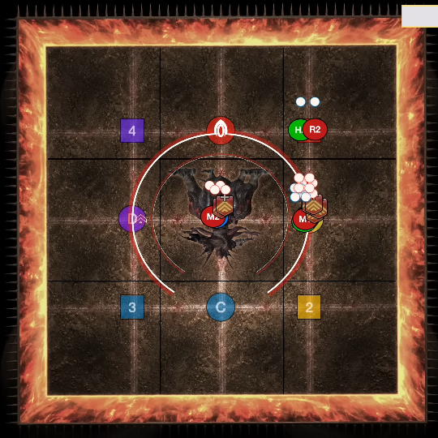
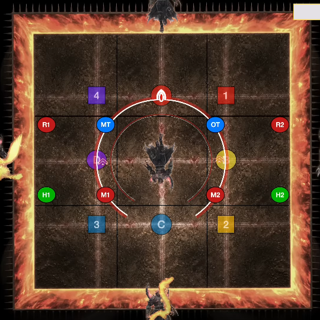

Mount Ordeals (Extreme) is a high-end duty added in patch 6.3: Gods Revel, Lands Tremble. The fight can be unlocked by speaking to The Wandering Minstrel in Old Sharlayan (12.7, 14.3) after completing Mount Ordeals.
The minimum ilvl required to enter this fight is 610.
Hephaistos will do a random Conceptual Tetraflare or Conceptual Octaflare. This will go off after the upcoming Volcanic Torches.
Everyone should go to their intercard quadrant. There are 3 possible safe spots in your corner of 4 squares (the far corner is never safe). The safe spot will be determined by which way the flames turn as soon as they hit the first wall. Depending on your pattern, you can pre-position for the next mechanic, Sunforge.


This follows up 2 seconds after the previous Volcanic Torches, so you'll need to be fast. Depending on your Volcanic Torches pattern, you may need to run from your safe white square spot to your safe black square spot. The Conceptual Tetraflare / Conceptual Octaflare also resolves at the same time, so be ready to stack or spread while respecting the Sunforge column AOEs. If it's a Conceptual Tetraflare, ranged players should stack on the tanks / melees. The image shown is phoenix + Conceptual Octaflare.

Here is a video example of the mechanic from ranged2's POV with Conceptual Tetraflare and the serpent for Sunforge.
The order of whether snake goes first or centaur goes first is random. This guide will assume that centaur goes first. Thus, the timeline for major mechanics is Centaur1 → Manifold Flames → Snake1 → Fourfold Flames → Centaur2 → Snake2 → Enrage.
This is 4 sets of 2 AOEs each. Each AOE inflicts a vuln. Spread out to your clock spots to ensure you don't get clip other people. Remember which AOE you got (1st, 2nd, 3rd, or 4th), as that will be the same order you bait AOEs in a moment.
Hephaistos will do four sets of jumps, each one being a 2-person stack with a big AOE. The players who got the 1st AOE should position NE. The players who got hit 2nd should be center. The 3rd and 4th pair should be on the safe spot East, but ready to move as soon as their other pairs get hit. After the 1st AOE pair gets stomped, the 3rd pair should swap with them. Similarly, after the 2nd AOE pair gets stomped, the 4th AOE pair should swap with them. Refer to the image below (there won't be dots over your head, that's just for guide stuffs).
Hephaistos will spawn 4 clones of himself, 1 on each cardinal. 2 clones (always adjacent to each other) will create a phoenix and a serpent. The party should position themselves in the row or column directly in front of the phoenix (but not the center square), as these will be the safe spots. In the image below, notice how we line up based on our intercard partners (with melees close and ranged far).
Either all 4 supports or all 4 DPS will be hit by an AOE that inflicts vuln. The people that weren't hit should go inside Hephaistos's hitbox on the intercards to bait a proximity line AOE (the intercard you take is the same as your regular intercard, so M1 or H1 would take SW). If you were hit by the vuln AOE, be on any cardinal to avoid the baiters' line AOEs.